Agent Skill · MIT




本机离线的 TOTP 保管库，Tauri 2 + Rust。断网也能出码，不注册、不同步；暂不支持 HOTP 与摄像头扫码。
看详情
单人本机记账。Android WebView 与 Electron 用同一份 UI 源，代码里没有网络请求，数据只落在这台机器上。
看详情
手写 HTML 静态站：无构建、无框架、无外部字体。源码公开可读，但仓库没附许可证——公开不等于开源。你现在看的这一页就是它本身。
看源码不定时发，只记真发生了的事：版本、边界改动、还有这次改版。同步进 feed.xml，订了 RSS 就能看到。
Windows 安装包可以双击装了；保管层做了两套后端，各自带契约测试。
看详情导入前先校验格式并自动备份；一旦写入失败就整次回滚，不再留下半张账本。
看详情README 补上「刻意不做什么」表，写清砍掉的特性与原因；安装目标到 19 个宿主。
看详情接入 agentskills.io 开放规范，安装目标到 15 个；三条数据铁律写进 SKILL.md。
看详情首页继续做项目陈列；视觉语言换成暖白编辑式，图纸与交互同步重整。
看源码白天是券商理财顾问，晚上是独立交易者，中间的空当在写自己的工具。三个身份其实是一件事：把判断落成能复查、能交接、换台电脑还在的东西。所以上面的仓库都守着同一条：本机优先、少依赖、边界写明白。顺序固定：定边界 → 取数与验证 → 打包发布 → 写交接。
依赖只压在能压的地方——栈：Python 3.8+ · Tauri 2 + Rust · Android WebView / Electron · 手写 HTML（本站）。
看项目